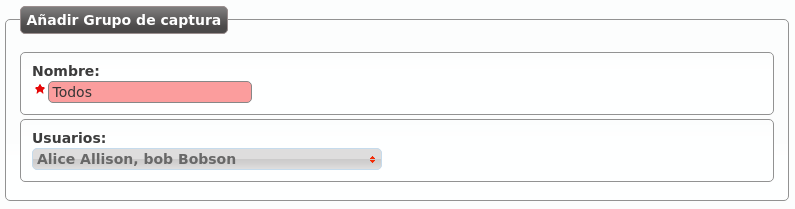

Call pickup¶
Call pickup is the process where a user can answer a call that is being ringing in another terminal. No need to say that, somehow (sound, flashing lights, notification, etc) the users must know that the call is ringing elsewhere.
IvozProvider supports two kind of call pickups:
- Direct pickup
- In this type of pickup, the user that is trying to capture the ringing call must include the extension of the target phone after the service code. For example, if the direct pickup code is *95, the user must dial *95101 to capture a call that is ringing in the extension 101.
- Group pickup
- In this type of pickup, the user that is trying to capture the ringing call will just dial the service code. If anyone in any of the pickup groups of the user has a ringing call, it will be answered by the capturer.
Call pickup groups¶
In order to make call group pickups, the capturer user must be part of the same group that the target user that wants to capture.
The section Pickup groups allows the company administrator to configure what users will be in each group:
As shown in the section Users configuration, we can add or edit the groups of a user in the user’s edit screen.
Note
A user can be part of multiple pickup groups. The system will take all of them into account when using the group pickup service.
Group pickup service code¶
IvozProvider supports 2 different configuration levels for defining the service codes for pickup:
- At brand level: Brand configuration > Services.
- At company level: Company configuration > Services.
The brand administrator can configure generic codes that all the companies will use. Companies can customize this codes if they are used to another ones.
The following section explains the services in depth, with all the additional services that can be accessed by dialing codes starting with *.